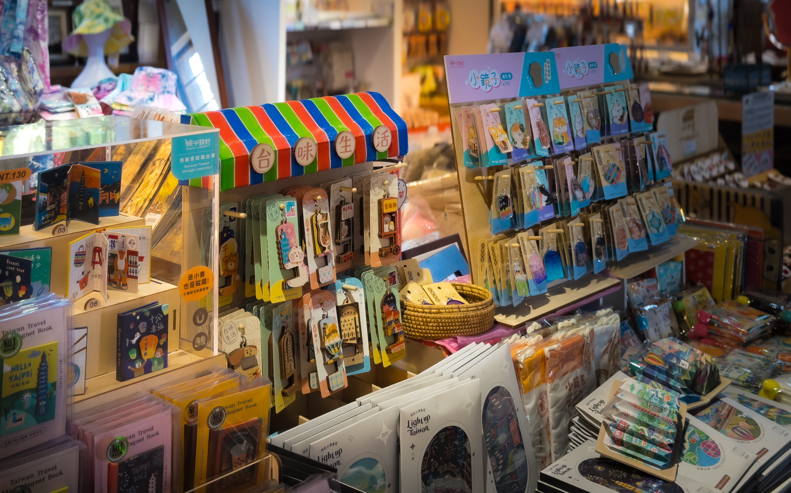
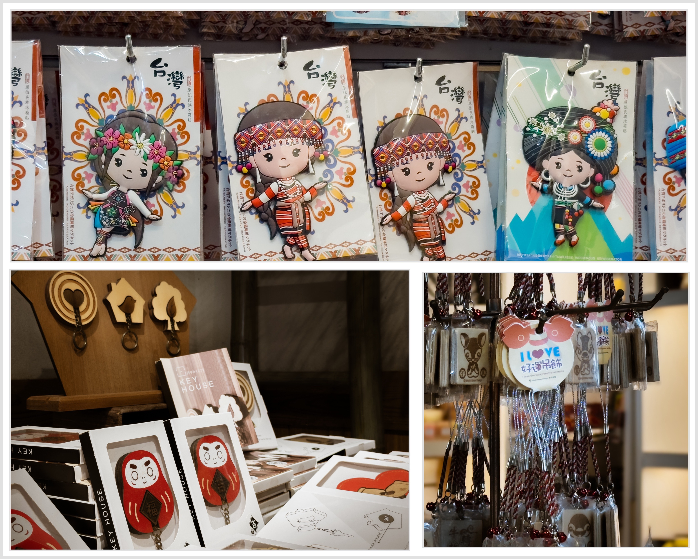

「ゆっくり生活館（慢慢生活館）」は、花蓮の地元アーティストのために作られた創作および販売プラットフォームです。私たちは、地元の職人、デザイナー、文化クリエイティブ従事者の分野を超えた統合の支援に尽力しています。ここでは、織物、手芸、木工から金工まで、多岐にわたる分野の芸術の結晶を見ることができます。一つ一つの作品には、花蓮の土地の温もりと職人のこだわりが込められています。
色鮮やかな展示エリアでは、「台湾の味のある生活」のミニチュアマグネットや様々な小物が目を引きます。台湾の街並み、レトロな看板、日常の記憶を小さな四角の中に凝縮したデザインは、スポットライトの柔らかな光に照らされ、まるで時空のミニチュア展示のようです。

空間の奥の一角には、原住民の伝統衣装を着た可愛らしいマグネットが掛けられています。鮮やかな模様と繊細な色彩は、東台湾特有の多様な文化の鼓動を静かに呼応させています。その傍らには、温かみのある木製のお祈りオーナメントやだるま型のキーホルダーがあり、重厚な文化の底力を軽やかな日常の寄り添いへと変えています。工夫が凝らされたこのセレクト空間では、すべての品物が旅人に「歩みを緩め、時が流れる痕跡をじっくりと味わって」と優しく語りかけているかのようです。